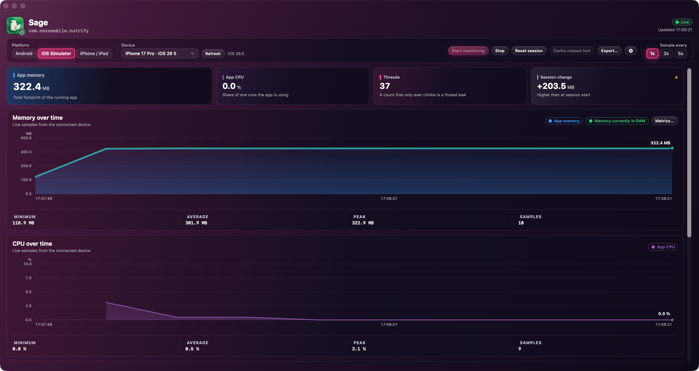
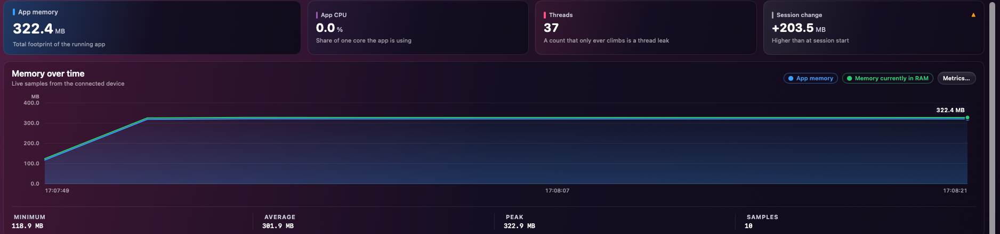
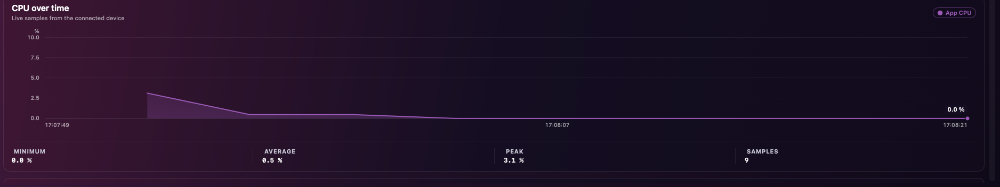
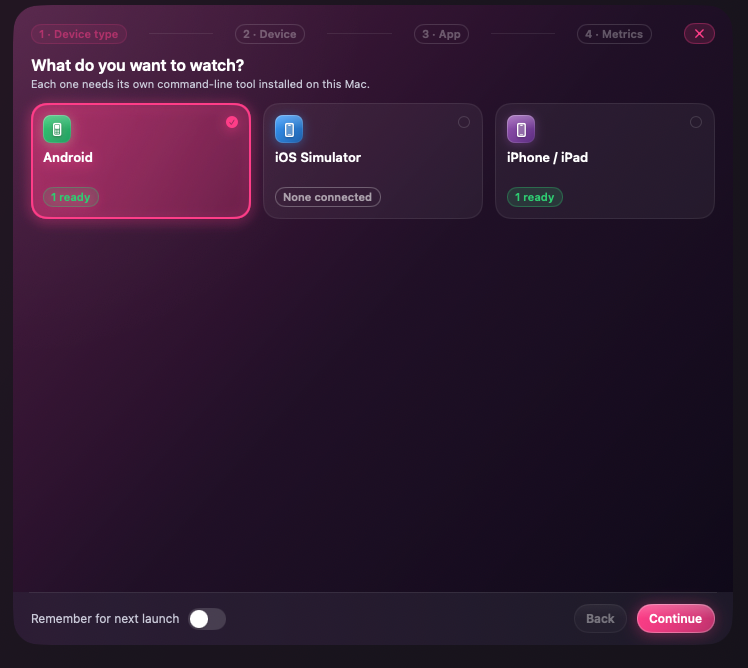

Device Performance Monitor watches the live memory, CPU, threads and frame-rate of one app — on an Android phone, an iOS Simulator, or a real iPhone or iPad. Have an AI read the session, then reach for the built-in tools: app bundle size, startup timing, a live log viewer and battery. You pick the platform, the device and the app inside the window. Nothing is hard-coded.
brew install --cask coursion-studio/tools/device-performance-monitor
One app at a time, sampled once a second, with only the metrics you chose fetched — so the tool never distorts what it is measuring.
App PSS, resident and swap, plus the full pool breakdown — native heap, Java heap, graphics, code — updated every second.
Per-process CPU and a live thread count, read straight from /proc and differenced tick to tick.
Frames per second from SurfaceFlinger — even for a SurfaceView game — with jank percentage and frame-time p95 from gfxinfo.
Battery level, temperature and current draw, plus per-app received and sent throughput.
One Android phone over adb, an iOS Simulator, or a real iPhone or iPad — chosen in the window, nothing hard-coded.
Have Claude, GPT, or Gemini read a session — a plain-language summary, per-screen diagnosis and fixes, a worst-screens ranking and anomaly flags, with your own API key.
See which screen the app was showing for every reading — native and React Native — so a spike or leak is pinned to the route that caused it.
Save a session as CSV, JSON, Markdown or a shareable HTML report — and set a run as a baseline to diff future runs against it.
A hub of standalone tools sits alongside live monitoring — pick one from the Home screen and get to work. More land over time.
Drop an .apk, .aab or .ipa and see where its bytes go — a composition bar, a category breakdown, a treemap and the biggest files. For an App Bundle it estimates the real per-device download (one ABI, debug symbols excluded) and matches Android Studio; run bundletool for the exact figure, compare two builds, or ask an AI how to shrink it.
Measure cold and warm launch times over adb across a batch of runs, charted with averages — so a regression in first-frame time is obvious.
Stream live device logs — logcat or syslog — with a text filter and a minimum level, colored by severity, follow the tail, and save the filtered lines to a file.
Track charge level, temperature, charging state and thermal status over a session, with a derived drain rate and charts. Android and real iPhone.
Memory that never comes back down, a CPU spike that lines up with a tap, a thread count that only climbs — the things you open the app to find.
The app's total footprint and the share actually resident in RAM, charted second by second with minimum, average and peak called out. The session-change card tells you at a glance whether you finished heavier than you started.

Per-process CPU as a share of a core, a live thread count that surfaces leaks the moment it stops coming back down, and frame-rate, jank and frame-time percentiles for anything that draws.

Start by choosing what to watch — an Android phone over adb, an iOS Simulator, or a real iPhone or iPad. The app finds ready devices for you; nothing is hard-coded to one project.

A signed, universal build for Apple silicon and Intel that updates itself in place.
Prefer the command line? Install and upgrade it with a cask.
brew install --cask coursion-studio/tools/device-performance-monitorRequires macOS 14 (Sonoma) or later. Android monitoring needs adb; iOS monitoring needs Xcode's command-line tools. The bundle-size tool works on its own; its exact per-device figure optionally uses bundletool, and AI analysis uses your own Claude, OpenAI or Gemini key.